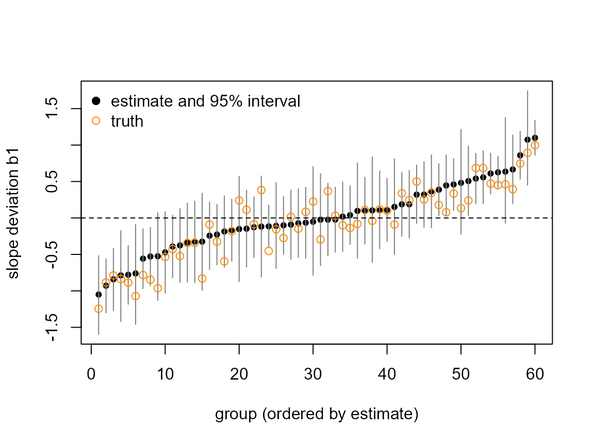
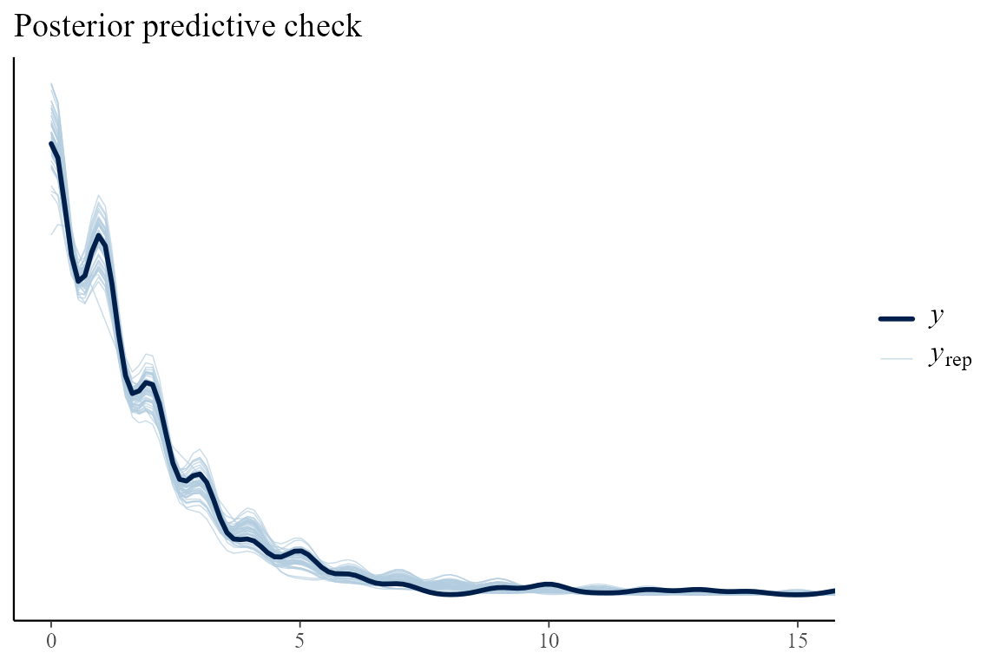
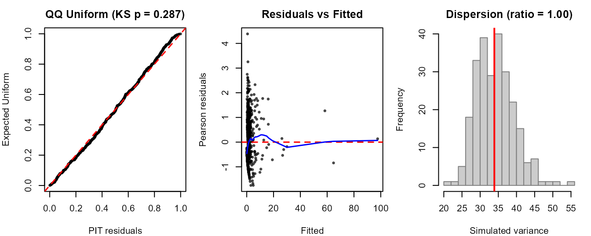
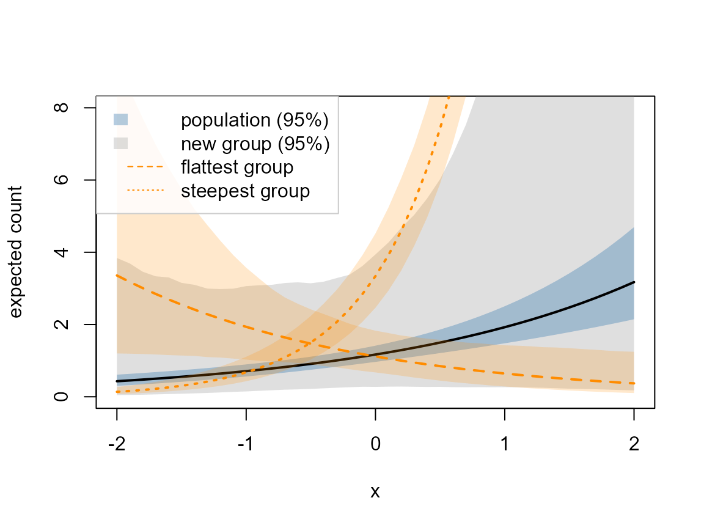

This article fits a Poisson model in which every group has its own intercept and its own slope, recovers the covariance of those group effects from simulated data, and ends with guidance on how many groups a covariance needs. Along the way it extracts the per-group effects, checks the fit, predicts for a known and a new group, compares against a random-intercept model, and runs the crossed, nested and uncorrelated formula terms. Installation is covered in Get started.
The covariance is the quantity of interest
A random-intercept model, y ~ x + (1 | g), has a single
variance component: how much the groups differ in their baseline. A
random-slope model, y ~ x + (1 + x | g), has three: the
intercept variance, the slope variance, and the correlation between
them. That correlation is often the scientific question (do groups that
start high also respond more steeply?), so it is inferred with its own
uncertainty.
tulpa() treats the whole random-effect covariance
as the inferred object. When a term carries slopes, the fit integrates
over
instead of conditioning on a plug-in value.
The model
Index the groups by and the observations within group by . Let be the count of observation in group and its covariate. The count is Poisson with mean , and its log is linear in the covariate with a group-specific intercept and slope,
where and are the population intercept and slope (the fixed effects) and is the deviation of group from them (its random effects). The deviations are independent across groups and share one bivariate normal distribution,
with
the standard deviation of the group intercepts,
that of the group slopes, and
their correlation. The formula term (1 + x | g) declares
this full
;
(1 + x || g) fixes
.
The fit needs coordinates in which every value is a valid covariance matrix. Write with lower triangular and positive diagonal (the Cholesky factor). The three numbers
range over all of , and each gives a positive-definite . These log-Cholesky coordinates are the space the engine integrates over; a diagonal block uses instead. For a term with coefficients a full block has coordinates and a diagonal block .
The integration has two layers. At a fixed , a Laplace approximation integrates out and every and returns the marginal likelihood of . Over , a central composite design (CCD) places nodes around the mode of that marginal likelihood, rotated by its curvature, and weights each node by marginal likelihood times hyperprior. The default hyperprior is a penalized-complexity (PC) prior on each and an LKJ prior on the correlation, described under Priors on the covariance. A reported , or is a weighted quantile over the nodes, so a skewed posterior keeps its skew.
Simulating data
The simulation has 60 groups of 12 observations, a population
intercept of 0.2 and a population slope of 0.5 on the log scale. The
group intercepts vary with standard deviation 0.7 and the group slopes
with 0.5, at correlation 0.4: groups with a higher baseline tend to
respond more steeply to x.
G <- 60L # groups
npg <- 12L # observations per group
N <- G * npg
grp <- rep(seq_len(G), each = npg)
x <- rnorm(N)
# True Sigma: sd 0.7 (intercept), 0.5 (slope), correlation 0.4.
Sigma <- matrix(c(0.7^2, 0.4 * 0.7 * 0.5,
0.4 * 0.7 * 0.5, 0.5^2), 2)
u <- t(t(chol(Sigma)) %*% matrix(rnorm(2 * G), 2)) # G x 2 group effects
eta <- 0.2 + 0.5 * x + u[grp, 1] + u[grp, 2] * x
y <- rpois(N, exp(eta))
d <- data.frame(y = y, x = x, g = factor(grp))
head(d, 3)
#> y x g
#> 1 4 -0.3134385 1
#> 2 7 0.5719575 1
#> 3 3 -0.1357020 1u holds the true group effects, one row per group:
column 1 the intercept deviation
,
column 2 the slope deviation
.
They are kept so that the per-group estimates can be compared with them
below.
Fitting
A (1 + x | g) term with mode = "laplace"
routes the fit to the nested-Laplace integration over
(tulpa_re_cov_nested()).
fit <- tulpa(y ~ x + (1 + x | g), data = d, family = "poisson",
mode = "laplace", control = list(n_threads = 2))
fit
#> tulpa fit (re_cov_nested, tier 2)
#> Call: tulpa(formula = y ~ x + (1 + x | g), data = d, family = "poisson", mode = "laplace", control = list(n_threads = 2))
#> n_obs: 720
#>
#> Coefficients:
#> (Intercept) x
#> 0.1558 0.4995
#>
#> Use summary() for intervals, variance components, hyperparameters and reliability.The printed header names the backend, re_cov_nested.
fixef() returns the population intercept and slope, and
summary() adds their intervals.
fixef(fit)
#> (Intercept) x
#> 0.1558283 0.4995184
summary(fit)$coefficients
#> estimate std.error 2.5 % 97.5 %
#> (Intercept) 0.1558283 0.09675611 -0.04133764 0.3397208
#> x 0.4995184 0.08116211 0.34390156 0.6626894VarCorr() reports the standard deviation of each
random-effect coefficient; its cov attribute holds the
posterior mean of
,
with the correlation matrix attached.
vc <- VarCorr(fit)
vc
#> term coef sd source
#> 1 g (Intercept) 0.6790617 estimated
#> 2 g x 0.5498792 estimated
attr(vc, "cov")$g
#> (Intercept) x
#> (Intercept) 0.46112476 0.09294939
#> x 0.09294939 0.30236712
#> attr(,"correlation")
#> (Intercept) x
#> (Intercept) 1.0000000 0.2489259
#> x 0.2489259 1.0000000The full posterior summary of the covariance is the
hyperparameters table of summary(): the two
standard deviations, the correlation, and the three entries of
,
each with a 95% interval.
summary(fit)$hyperparameters[, c("parameter", "median", "ci_lo", "ci_hi")]
#> parameter median ci_lo ci_hi
#> 1 sigma_1 0.66910023 0.53930147 0.8410680
#> 2 sigma_2 0.54153967 0.43160669 0.6866828
#> 3 rho_12 0.25813411 -0.05405206 0.5306970
#> 4 Sigma_11 0.44769511 0.29084608 0.7073954
#> 5 Sigma_12 0.09138158 -0.02076807 0.2156442
#> 6 Sigma_22 0.29326521 0.18628434 0.4715332The intervals contain the true , and . The correlation interval also contains zero: with 60 groups the data cannot separate a correlation of 0.4 from none.
ranef() returns one row per group and coefficient. Terms
named g[j] are the intercept deviations and
g.x[j] the slope deviations; estimate,
sd and the interval come from the node mixture
(source = "mixture"), so they carry both the within-node
uncertainty and the uncertainty in
.
re <- as.data.frame(ranef(fit))
head(re, 4)
#> term estimate sd conf.low conf.high source
#> 1 g[1] 1.0500600 0.1800964 0.6987102 1.4049765 mixture
#> 2 g.x[1] 1.0986018 0.1215947 0.8609155 1.3379796 mixture
#> 3 g[2] -1.1001988 0.3758995 -1.8542529 -0.3783968 mixture
#> 4 g.x[2] -0.0520496 0.3794415 -0.7865480 0.7041457 mixtureInterpreting the per-group effects
Split the table into intercepts and slopes, line each up with its true value, and count how many intervals contain the truth.
re_int <- re[grepl("^g\\[", re$term), ]
re_slp <- re[grepl("^g\\.x\\[", re$term), ]
c(intercept = mean(re_int$conf.low <= u[, 1] & u[, 1] <= re_int$conf.high),
slope = mean(re_slp$conf.low <= u[, 2] & u[, 2] <= re_slp$conf.high))
#> intercept slope
#> 0.9500000 0.9833333
range(re_slp$conf.high - re_slp$conf.low) # slope interval widths
#> [1] 0.4342901 1.4906937The figure orders the groups by their estimated slope deviation and draws each 95% interval with the true value as an open circle.
o <- order(re_slp$estimate)
plot(seq_len(G), re_slp$estimate[o], pch = 19, cex = 0.7,
ylim = range(re_slp$conf.low, re_slp$conf.high, u[, 2]),
xlab = "group (ordered by estimate)", ylab = "slope deviation b1")
segments(seq_len(G), re_slp$conf.low[o], seq_len(G), re_slp$conf.high[o],
col = "grey50")
points(seq_len(G), u[o, 2], pch = 1, col = "darkorange")
abline(h = 0, lty = 2)
legend("topleft", c("estimate and 95% interval", "truth"),
pch = c(19, 1), col = c("black", "darkorange"), bty = "n")
The slope intervals contain the true deviation for 59 of the 60 groups, and the intercept intervals for 57. The slope interval widths range from 0.43 to 1.49, so a slope estimated for one group can be much less certain than the slope of its neighbour in the ordering.
Checking the fit
A predictive check simulates replicate data sets from the posterior
and compares them with the observed counts. On the nested fit,
posterior_predict() draws each replicate’s fixed effects
from one integration node and the group effects jointly with them from
that node’s Gaussian, so every replicate carries the group lines.
pp_check() overlays the density of 50 replicate data sets
on the observed counts and returns a ggplot; the counts reach above 100
in a few steep groups, so the plot is cut at 15 to show the bulk.
pp_check(fit) + ggplot2::coord_cartesian(xlim = c(0, 15))
#> Coordinate system already present.
#> i Adding new coordinate system, which will replace the existing one.
The observed density lies inside the band of replicates over the whole range.
check_model() gives the formal version: a
Kolmogorov-Smirnov test of the randomized PIT residuals against the
uniform distribution (ks_p), and the ratio of observed to
replicated variance (disp_ratio, near 1 when the model
reproduces the spread of the data).
It also draws three panels: the PIT residuals against the uniform quantiles, Pearson residuals against fitted values, and the observed variance against its replicate distribution.
cm <- check_model(fit)
unlist(cm)
#> ks_p disp_ratio
#> 0.2869773 0.9989860ks_p is 0.29 and disp_ratio is 1: the PIT
residuals are consistent with uniformity and the replicates reproduce
the spread of the counts. The middle panel reads fitted(),
which returns the conditional mean with each group’s own effect;
fitted(fit, effects = "population") holds the group effects
at zero.
The exact Metropolis-within-Gibbs fit samples
and the group effects together and gives an independent read of the
covariance. Ask for it with control$re_cov = "gibbs".
fit_gibbs <- tulpa(y ~ x + (1 + x | g), data = d, family = "poisson",
mode = "laplace",
control = list(re_cov = "gibbs", n_iter = 2000L,
warmup = 1000L, n_threads = 2))
summary(fit_gibbs)$hyperparameters[1:3, c("parameter", "median",
"ci_lo", "ci_hi")]
#> parameter median ci_lo ci_hi
#> 1 sigma_1 0.6681900 0.54127640 0.8407927
#> 2 sigma_2 0.5382695 0.43772302 0.6841904
#> 3 rho_12 0.2784001 -0.04806068 0.5514856The sampler and the nested integration agree on all three covariance parameters to within 0.02.
Prediction
predict() conditions on the groups named in
newdata. With re_form = NA it returns the
population-level prediction: fixed effects only, random effects at
zero.
nd <- data.frame(x = seq(-2, 2, length.out = 41))
pop <- predict(fit, newdata = nd, type = "link", se.fit = TRUE, re_form = NA)
head(pop, 3)
#> fit se.fit lower upper
#> 1 -0.8432084 0.1793983 -1.194823 -0.4915942
#> 2 -0.7932566 0.1725761 -1.131499 -0.4550137
#> 3 -0.7433047 0.1658745 -1.068413 -0.4181968A new group draws its own
from
.
At covariate
its linear predictor adds
,
whose variance is
with
.
A group label the fit did not see gets that predictive interval:
predict() reads it over joint draws of the fixed effects
and of
,
with
drawn from its posterior.
new <- predict(fit, newdata = data.frame(nd, g = "new"), type = "link",
se.fit = TRUE)
round(c(pop_width = pop$upper[21] - pop$lower[21],
new_width = new$upper[21] - new$lower[21]), 2)
#> pop_width new_width
#> 0.38 2.67At the link-scale interval for a new group is about seven times wider than the population interval, because it carries the spread of group intercepts. A known group instead takes its own posterior effect: a label the fit saw draws that group’s intercept and slope jointly with the fixed effects. The figure shows the population and new-group bands on the count scale, with the fitted lines and bands of the two groups with the smallest and largest estimated slope.
jj <- levels(d$g)[c(which.min(re_slp$estimate), which.max(re_slp$estimate))]
known <- lapply(jj, function(gj)
predict(fit, newdata = data.frame(nd, g = gj), type = "link", se.fit = TRUE))
band <- function(p, col) polygon(c(nd$x, rev(nd$x)),
exp(c(p$lower, rev(p$upper))),
col = col, border = NA)
plot(nd$x, exp(pop$fit), type = "n", ylim = c(0, 8),
xlab = "x", ylab = "expected count")
band(new, adjustcolor("grey60", 0.3))
band(pop, adjustcolor("steelblue", 0.4))
lines(nd$x, exp(pop$fit), lwd = 2)
for (k in seq_along(known)) {
band(known[[k]], adjustcolor("darkorange", 0.2))
lines(nd$x, exp(known[[k]]$fit), lty = k + 1, col = "darkorange", lwd = 2)
}
legend("topleft", c("population (95%)", "new group (95%)",
"flattest group", "steepest group"),
fill = c(adjustcolor("steelblue", 0.4), adjustcolor("grey60", 0.3),
NA, NA), border = NA, lty = c(NA, NA, 2, 3),
col = c(NA, NA, "darkorange", "darkorange"),
bg = adjustcolor("white", 0.85), box.col = "grey80")
Comparing against a random-intercept model
Does the slope variance earn its place? Fit (1 | g) on
the same data and compare model evidence. Two settings matter. Under
mode = "laplace" a plain (1 | g) term
conditions on a supplied sigma_re;
control$re_cov = "nested" integrates its scale like any
other covariance block. And logLik() on a CCD design
declines to report an evidence, so both fits use the tensor-product grid
(integration = "grid"), on which the evidence is read under
the hyperprior.
ctl <- list(integration = "grid", n_threads = 2)
fit_slp <- tulpa(y ~ x + (1 + x | g), data = d, family = "poisson",
mode = "laplace", control = ctl)
fit_int <- tulpa(y ~ x + (1 | g), data = d, family = "poisson",
mode = "laplace", control = c(ctl, list(re_cov = "nested")))
compare_models(intercept = fit_int, slopes = fit_slp, criterion = "loglik")
#> model n_params logLik quantity conditioned_on
#> 1 intercept 2 -1307.619 log_evidence
#> 2 slopes 2 -1147.858 log_evidenceThe log evidence of the random-slope model is higher by 159.8 nats.
The evidence integrates over
under its prior, so it already charges the slope model for its two extra
covariance parameters. compare_models(criterion = "waic")
and "loo" also run on the nested door, on replicates that
carry the per-group effects.
Formula syntax
Each term inside ( | ) becomes one covariance block, and
every block is integrated. The fits below run on the data above or on
small variants of it.
| Term | Covariance block |
|---|---|
(1 \| g) |
1 x 1: intercept SD |
(1 + x \| g) |
2 x 2 full: two SDs and a correlation |
(1 + x \|\| g) |
2 x 2 diagonal: two SDs, correlation fixed at 0 |
(1 \| g) + (1 \| h) |
two 1 x 1 blocks, crossed factors |
(1 \| site/plot) |
two 1 x 1 blocks, site and site:plot
|
Uncorrelated slopes
|| drops the correlation, leaving two log-SD
coordinates.
fit_diag <- tulpa(y ~ x + (1 + x || g), data = d, family = "poisson",
mode = "laplace", control = list(n_threads = 2))
VarCorr(fit_diag)
#> term coef sd source
#> 1 g (Intercept) 0.6935839 estimated
#> 2 g x 0.5591409 estimatedThe two standard deviations are close to those of the correlated fit. With the true and an interval for that contains zero, the diagonal block loses little here.
Crossed factors
Crossed factors are groupings that do not nest, such as observer and
site: each observer visits many sites and each site has many observers.
The simulation adds a second factor h with 15 levels
assigned at random, with intercept SD 0.5.
set.seed(3)
h <- factor(sample(1:15, N, replace = TRUE))
yc <- rpois(N, exp(0.2 + 0.5 * x + u[grp, 1] + rnorm(15, 0, 0.5)[h]))
dc <- data.frame(y = yc, x = x, g = factor(grp), h = h)
fit_crossed <- tulpa(y ~ x + (1 | g) + (1 | h), data = dc,
family = "poisson", mode = "laplace",
control = list(re_cov = "nested", n_threads = 2))
VarCorr(fit_crossed)
#> term coef sd source
#> 1 g (Intercept) 0.7756095 estimated
#> 2 h (Intercept) 0.4165296 estimatedThe true intercept SDs are 0.7 for g (the same
u[, 1] as above) and 0.5 for h.
Nested factors
Nested factors are groupings where each level of the inner one sits
inside a single level of the outer one: 5 plots inside each of 12 sites
here, with SD 0.6 between sites and 0.3 between plots within a site.
(1 | site/plot) expands to
(1 | site) + (1 | site:plot), so plot labels can repeat
across sites.
site <- factor(rep(1:12, each = 60))
plot_id <- factor(rep(1:5, each = 12, times = 12))
sp <- interaction(site, plot_id)
yn <- rpois(N, exp(0.2 + 0.5 * x + rnorm(12, 0, 0.6)[site] +
rnorm(60, 0, 0.3)[sp]))
dn <- data.frame(y = yn, x = x, site = site, plot = plot_id)
fit_nested <- tulpa(y ~ x + (1 | site/plot), data = dn,
family = "poisson", mode = "laplace",
control = list(re_cov = "nested", n_threads = 2))
VarCorr(fit_nested)
#> term coef sd source
#> 1 site (Intercept) 0.6001453 estimated
#> 2 site:plot (Intercept) 0.3272891 estimatedPriors on the covariance
The default hyperprior of a full block is built by
re_cov_pc_lkj_prior(). Each standard deviation gets a PC
prior, an exponential distribution calibrated by
prior_sigma = c(U, alpha) so that
;
the default is
.
The correlation matrix gets an LKJ prior with shape eta,
density proportional to
,
which for a 2 x 2 block is
.
The default eta = 2 favours weak correlations mildly;
eta = 1 is uniform on
.
The function returns the log density in the block’s log-Cholesky
coordinates, Jacobian included, so it can be read at the true
directly.
L <- t(chol(Sigma))
theta_true <- c(log(L[1, 1]), log(L[2, 2]), L[2, 1])
lp2 <- re_cov_pc_lkj_prior(2)
lp4 <- re_cov_pc_lkj_prior(2, eta = 4)
c(eta2 = lp2(theta_true), eta4 = lp4(theta_true))
#> eta2 eta4
#> -3.771227 -4.078503At the front door, the same two settings are passed as
re_prior = list(prior_sigma =, eta =). Three priors on the
same data show how much they move the posterior: the default, a tighter
scale prior
with eta = 4, and a uniform correlation prior.
priors <- list(default = NULL,
tight = list(prior_sigma = c(1, 0.01), eta = 4),
uniform = list(eta = 1))
sens <- do.call(rbind, lapply(names(priors), function(p) {
f <- tulpa(y ~ x + (1 + x | g), data = d, family = "poisson",
mode = "laplace", re_prior = priors[[p]],
control = list(n_threads = 2))
h <- summary(f)$hyperparameters[1:3, ]
data.frame(prior = p, parameter = h$parameter, median = round(h$median, 3),
ci_lo = round(h$ci_lo, 3), ci_hi = round(h$ci_hi, 3))
}))
sens
#> prior parameter median ci_lo ci_hi
#> 1 default sigma_1 0.669 0.539 0.841
#> 2 default sigma_2 0.542 0.432 0.687
#> 3 default rho_12 0.258 -0.054 0.531
#> 4 tight sigma_1 0.652 0.528 0.814
#> 5 tight sigma_2 0.529 0.423 0.666
#> 6 tight rho_12 0.238 -0.052 0.498
#> 7 uniform sigma_1 0.669 0.539 0.841
#> 8 uniform sigma_2 0.542 0.432 0.687
#> 9 uniform rho_12 0.272 -0.048 0.548With 60 groups the medians move by a few hundredths across the three
priors, and the tighter prior shifts all three parameters slightly
toward zero. The Gibbs backend uses a conjugate inverse-Wishart prior
instead, set through
re_prior = list(prior_df =, prior_scale =).
Small binary groups: when the exact sampler matters
The Laplace approximation inside each node treats every group’s likelihood as Gaussian in . For binary responses in small groups that likelihood is far from Gaussian, and the approximation pulls the variance components low. The Gibbs sampler draws from its exact conditional distribution, an inverse-Wishart, given the sampled , and does not have that bias.
The simulation below has 50 groups of 6 binary observations, true , and . Each of 20 replicate data sets is fitted with both backends. The table averages the posterior medians of the two standard deviations and counts the fits whose slope SD collapsed (posterior median below 0.05).
sim_bin <- function(seed) {
set.seed(seed)
gg <- rep(1:50, each = 6)
xx <- rnorm(300)
b0 <- rnorm(50, 0, 1)
b1 <- rnorm(50, 0, 0.7)
yy <- rbinom(300, 1, plogis(-0.3 + 0.8 * xx + b0[gg] + b1[gg] * xx))
data.frame(y = yy, x = xx, g = factor(gg))
}
med3 <- function(f) summary(f)$hyperparameters$median[1:3]
reps <- sapply(1:20, function(s) {
db <- sim_bin(s)
fn <- tulpa(y ~ x + (1 + x | g), data = db, family = "binomial",
mode = "laplace", control = list(n_threads = 2))
fg <- suppressWarnings(tulpa(y ~ x + (1 + x | g), data = db,
family = "binomial", mode = "laplace",
control = list(re_cov = "gibbs", n_iter = 2000L,
warmup = 1000L, n_threads = 2)))
c(med3(fn), med3(fg))
})
data.frame(truth = c(1, 0.7),
nested = round(rowMeans(reps[1:2, ]), 3),
gibbs = round(rowMeans(reps[4:5, ]), 3),
row.names = c("sigma_1", "sigma_2"))
#> truth nested gibbs
#> sigma_1 1.0 0.769 0.897
#> sigma_2 0.7 0.520 0.759
c(nested = sum(reps[2, ] < 0.05), gibbs = sum(reps[5, ] < 0.05))
#> nested gibbs
#> 0 0The loop hides its warnings to keep the output readable. The Gibbs fits warn about chain length, and the nested fits of replicates whose slope SD collapses repeat a warning that the marginal fixed-effect precision could not be formed. On a single analysis they are worth reading. Averaged over the replicates, the nested Laplace estimates both standard deviations below their true values, the slope SD most (0.45 against 0.7), and in 5 of the 20 replicates it places the slope SD at zero. The Gibbs averages are within 0.1 of the truth, and none of its fits collapses.
Adaptive Gauss-Hermite quadrature
A deterministic alternative keeps the nested integration over
and replaces the per-group Laplace step by adaptive Gauss-Hermite
quadrature with n_quad points per dimension
(control$re_cov = "aghq"). n_quad = 1 is the
Laplace step; higher orders integrate each group’s non-Gaussian
likelihood more accurately. It costs far more than the Laplace step: the
call below, on one of the binary data sets, takes about 50 seconds where
the Laplace fit takes about 20.
db1 <- sim_bin(1)
fit_aghq <- tulpa(y ~ x + (1 + x | g), data = db1, family = "binomial",
mode = "laplace",
control = list(re_cov = "aghq", n_quad = 3L, n_threads = 2))
summary(fit_aghq)$hyperparameters[1:3, c("parameter", "median",
"ci_lo", "ci_hi")]
#> parameter median ci_lo ci_hi
#> 1 sigma_1 0.51111913 0.03512889 1.0417341
#> 2 sigma_2 0.90974587 0.20144000 1.5745693
#> 3 rho_12 0.08522013 -0.67092129 0.7677516
round(reps[, 1], 3) # nested Laplace, then Gibbs, on the same data set
#> [1] 0.428 0.787 0.086 0.614 0.870 0.150reps[, 1] holds the nested and Gibbs medians of
,
and
for the same data set. Quadrature of order 3 raises both standard
deviations above the Laplace values:
from 0.45 to 0.54, against 0.65 from the Gibbs sampler, and
from 0.80 to 0.91, against 0.99.
How many groups a covariance needs
The interval for a correlation narrows slowly with the number of
groups, because each group contributes one noisy pair
.
The sweep below refits the Poisson model of the first sections at 10,
20, 40 and 80 groups, three data sets each, and reports the median width
of the 95% interval for
and
.
A fit whose slope SD collapses to zero has no interval for
;
the collapsed column counts those fits, and the width of
is the median over the others.
sim_pois <- function(G, seed) {
set.seed(seed)
gg <- rep(seq_len(G), each = npg)
xx <- rnorm(G * npg)
uu <- t(t(chol(Sigma)) %*% matrix(rnorm(2 * G), 2))
yy <- rpois(G * npg, exp(0.2 + 0.5 * xx + uu[gg, 1] + uu[gg, 2] * xx))
data.frame(y = yy, x = xx, g = factor(gg))
}
sweep <- do.call(rbind, lapply(c(10L, 20L, 40L, 80L), function(G) {
w <- sapply(1:3, function(s) {
h <- summary(tulpa(y ~ x + (1 + x | g), data = sim_pois(G, s),
family = "poisson", mode = "laplace",
control = list(n_threads = 2)))$hyperparameters
k <- match(c("sigma_2", "rho_12"), h$parameter)
c(h$median[k[1]], (h$ci_hi - h$ci_lo)[k])
})
data.frame(groups = G, collapsed = sum(w[1, ] < 0.05),
width_sigma_2 = round(median(w[2, ]), 2),
width_rho = round(median(w[3, ], na.rm = TRUE), 2))
}))
sweep
#> groups collapsed width_sigma_2 width_rho
#> 1 10 0 0.55 1.42
#> 2 20 0 0.44 0.91
#> 3 40 0 0.30 0.76
#> 4 80 0 0.21 0.46Practical guidance
The numbers below come from the fits in this article: Poisson counts with 12 observations per group, and binary responses with 6.
| Situation | Measured here | Choice |
|---|---|---|
| 10 groups, full 2 x 2 block | interval width 1.20 of 2; 1 of 3 fits collapsed the slope SD | read as unidentified; drop the correlation or the slope |
| 20 to 40 groups | width 0.93 to 0.78 | gives its sign at best |
| 80 groups | width 0.49, width 0.21 | the full block is informed |
| 6 binary observations per group | nested 0.45 against 0.7; 5 of 20 fits collapsed | control$re_cov = "gibbs" |
| 12 Poisson observations per group | nested and Gibbs medians within 0.02 on every parameter | nested Laplace |
A full block of coefficients has covariance parameters, three for an intercept and one slope. The sweep above suggests budgeting several tens of groups before reading the correlation, and treating a fit with fewer than about 20 groups as informative about the standard deviations only.
When the interval for covers zero,
(1 + x || g)keeps both standard deviations with one parameter fewer. In the example its SDs differed by 0.02 or less from those of the correlated fit.Compare a slope model against the random-intercept model with both fits on
integration = "grid", as in Comparing against a random-intercept model. The evidence already charges the slope model for its extra parameters.With 60 groups the three priors above moved the medians by 0.03 or less. With fewer groups the prior carries more of the posterior, so refit with a tighter
prior_sigmaand witheta = 1and compare.A random slope needs the covariate to vary within each group. If
xtakes one value per group, cannot be told apart from and the slope variance is not identified; leave the slope out.
See also
-
?tulpa_re_cov_nested,?tulpa_re_cov_gibbsand?tulpa_re_aghq: the three backends behind the formula door. -
?re_cov_pc_lkj_prior: the default hyperprior. - Get started: the basic fit, check and compare loop.
- The inference-modes vignette: how the Laplace and sampler tiers relate.